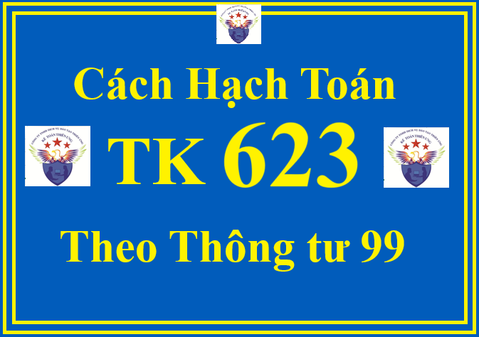

Theo Thông tư 99/2025/TT-BTC thì Tài khoản 623 - Chi phí sử dụng máy thi công dùng để tập hợp và phân bổ chi phí sử dụng xe, máy thi công phục vụ trực tiếp cho hoạt động xây, lắp công trình trong trường hợp doanh nghiệp thực hiện xây, lắp công trình theo phương thức thi công hỗn hợp vừa thủ công vừa kết hợp bằng máy.
Lưu ý:
+ Trường hợp doanh nghiệp thực hiện xây lắp công trình hoàn toàn theo phương thức bằng máy thì không sử dụng Tài khoản 623 - Chi phí sử dụng máy thi công mà hạch toán toàn bộ chi phí xây, lắp trực tiếp vào các Tài khoản 621, 622, 627.
+ Trường hợp doanh nghiệp thực hiện xây lắp công trình hoàn toàn theo phương thức bằng máy thì không sử dụng Tài khoản 623 - Chi phí sử dụng máy thi công mà hạch toán toàn bộ chi phí xây, lắp trực tiếp vào các Tài khoản 621, 622, 627.
+ Không hạch toán vào Tài khoản 623 - Chi phí sử dụng máy thi công khoản trích về bảo hiểm xã hội, bảo hiểm y tế, kinh phí công đoàn, bảo hiểm thất nghiệp tính trên lương phải trả công nhân sử dụng xe, máy thi công. Phần chi phí sử dụng máy thi công vượt trên mức bình thường không tính vào giá thành công trình xây lắp mà được kết chuyển ngay vào Tài khoản 632 - Giá vốn hàng bán.
1. Kết cấu và nội dung phản ánh của Tài khoản 623 - Chi phí sử dụng máy thi công theo Thông tư 99/2025/TT-BTC
| Bên Nợ: | Bên Có: |
|
Các chi phí liên quan đến hoạt động của máy thi công phát sinh (chi phí vật liệu cho máy hoạt động, chi phí tiền lương và các khoản phụ cấp lương, tiền công của công nhân trực tiếp điều khiển máy, chi phí bảo dưỡng, sửa chữa xe, máy thi công...). Chi phí vật liệu, chi phí dịch vụ khác phục vụ cho xe, máy thi công.
|
- Kết chuyển chi phí sử dụng xe, máy thi công vào bên Nợ Tài khoản 154 Chi phí sản xuất, kinh doanh dở dang.
- Kết chuyển chi phí sử dụng máy thi công vượt trên mức bình thường vào Tài khoản 632 - Giá vốn hàng bán.
|
| Tài khoản 623 không có số dư cuối kỳ. | |
Tài khoản 623 - Chi phí sử dụng máy thi công, có 6 tài khoản cấp 2:
+ Tài khoản 6231 - Chi phí nhân công: Dùng để phản ánh lương chính, lương phụ, phụ cấp lương phải trả cho công nhân trực tiếp điều khiển xe, máy thi công, phục vụ máy thi công như: Vận chuyển, cung cấp nhiên liệu, vật liệu... cho xe, máy thi công.
Tài khoản này không phản ánh khoản trích bảo hiểm xã hội, bảo hiểm y tế, kinh phí công đoàn theo quy định hiện hành được tính trên lương của công nhân sử dụng xe, máy thi công. Các khoản trích này được phản ánh vào Tài khoản 627 - Chi phí sản xuất chung.
+ Tài khoản 6232 - Chi phí vật liệu: Dùng để phản ánh chi phí nhiên liệu (xăng, dầu, mỡ...), vật liệu khác phục vụ xe, máy thi công.
+ Tài khoản 6233 - Chi phí dụng cụ sản xuất: Dùng để phản ánh công cụ, dụng cụ lao động liên quan tới hoạt động của xe, máy thi công.
+ Tài khoản 6234 - Chi phí khấu hao máy thi công: Dùng để phản ánh chi phí khấu hao xe, máy thi công sử dụng vào hoạt động xây lắp công trình.
+ Tài khoản 6237 - Chi phí dịch vụ mua ngoài: Dùng để phản ánh chi phí dịch vụ mua ngoài như thuê ngoài sửa chữa xe, máy thi công; tiền mua bảo hiểm xe, máy thi công; chi phí điện, nước, tiền thuê TSCĐ, chi phí trả cho nhà thầu phụ,...
+ Tài khoản 6238 - Chi phí bằng tiền khác: Dùng để phản ánh các chi phí bằng tiền phục vụ cho hoạt động của xe, máy thi công.
2. Cách định khoản hạch toán Tài khoản 623 theo Thông tư 99/2025/TT-BTC
Hạch toán chi phí sử dụng xe, máy thi công phụ thuộc vào hình thức sử dụng máy thi công: Tổ chức đội máy thi công riêng chuyên thực hiện các khối lượng thi công bằng máy hoặc giao máy thi công cho các đội, xí nghiệp xây lắp:
a) Nếu tổ chức đội xe, máy thi công riêng, được phân cấp hạch toán và có tổ chức kế toán riêng thì công việc kế toán được tiến hành như sau:
- Hạch toán các chi phí liên quan tới hoạt động của đội xe, máy thi công, ghi:
Nợ các TK 621, 622, 627
Có các TK 111, 112, 152, 331, 334, 214,...
Chi tiết về cách hạch toán TK 152 thì Công ty đào tạo Kế Toán Diệu Tâm mời các bạn tham khảo tại đây:
- Tại thời điểm kết thúc kỳ kế toán, kết chuyển chi phí sử dụng máy thi công vào bên Nợ Tài khoản 154 - Chi phí sản xuất kinh doanh dở dang, ghi:
Nợ TK 154 - Chi phí sản xuất kinh doanh dở dang
Có các TK 621, 622, 627.
- Hạch toán chi phí sử dụng xe, máy và tính giá thành ca xe, máy thực hiện trên Tài khoản 154 - Chi phí sản xuất, kinh doanh dở dang căn cứ vào giá thành ca máy (theo giá thành thực tế hoặc giá khoán nội bộ) cung cấp cho các đối tượng xây, lắp (công trình, hạng mục công trình); tùy theo phương thức tổ chức công tác kế toán và mối quan hệ giữa đội xe máy thi công với đơn vị xây, lắp công trình để ghi sổ:
+ Nếu doanh nghiệp thực hiện theo phương thức cung cấp dịch vụ xe, máy lẫn nhau giữa các bộ phận, ghi:

Nợ TK 623 - Chi phí sử dụng máy thi công
Có TK 154 - Chi phí sản xuất, kinh doanh dở dang.
Chi tiết về cách hạch toán TK 154 thì Công ty đào tạo Kế Toán Diệu Tâm mời các bạn tham khảo tại đây:
+ Nếu doanh nghiệp thực hiện theo phương thức bán dịch vụ xe, máy lẫn nhau giữa các bộ phận trong nội bộ, ghi:
+ Nếu doanh nghiệp thực hiện theo phương thức bán dịch vụ xe, máy lẫn nhau giữa các bộ phận trong nội bộ, ghi:
Nợ TK 623 - Chi phí sử dụng máy thi công
Nợ TK 133 - Thuế GTGT được khấu trừ (1331) (nếu có)
Có TK 511 - Doanh thu bán hàng và cung cấp dịch vụ (chi tiết cung cấp dịch vụ trong nội bộ)
Có TK 333 - Thuế và các khoản phải nộp Nhà nước (33311) (thuế GTGT phải nộp tính trên giá bán nội bộ về ca xe, máy bán dịch vụ) (nếu có).
b) Nếu không tổ chức đội xe, máy thi công riêng; hoặc có tổ chức đội xe, máy thi công riêng nhưng không tổ chức kế toán riêng cho đội thì toàn bộ chi phí sử dụng xe, máy (kể cả chi phí thường xuyên và chi phí tạm thời như: phụ cấp lương, phụ cấp lưu động của xe, máy thi công) sẽ hạch toán như sau:
- Căn cứ vào số tiền lương, tiền công và các khoản khác phải trả cho công nhân điều khiển xe, máy, phục vụ xe, máy, ghi:
Nợ TK 623 - Chi phí sử dụng máy thi công (6231)
Có TK 334 - Phải trả người lao động.
- Giá trị vật liệu, công cụ, dụng cụ sử dụng cho hoạt động của xe, máy thi công trong kỳ, ghi:
Nợ TK 623 - Chi phí sử dụng máy thi công (6232, 6233)
Có các TK 152, 153, 242,...
- Trường hợp mua vật liệu, công cụ, dụng cụ sử dụng ngay (không qua nhập kho) cho hoạt động của xe, máy thi công trong kỳ, ghi:
Nợ TK 623 - Chi phí sử dụng máy thi công (6232, 6233)
Nợ TK 133 - Thuế GTGT được khấu trừ (nếu có)
Có các TK 111, 112, 331,...
- Trích khấu hao xe, máy thi công sử dụng ở Đội xe, máy thi công, ghi:
Nợ TK 623 - Chi phí sử dụng máy thi công (6234)
Có TK 214 - Hao mòn TSCĐ.
Chi tiết về cách hạch toán TK 214 thì Công ty đào tạo Kế Toán Diệu Tâm mời các bạn tham khảo tại đây:
- Chi phí dịch vụ mua ngoài phát sinh (sửa chữa xe, máy thi công, điện, nước, tiền thuê TSCĐ, chi phí trả cho nhà thầu phụ,...), ghi:
Nợ TK 623 - Chi phí sử dụng máy thi công (6237)
Nợ TK 133 - Thuế GTGT được khấu trừ (nếu có)
Có các TK 111, 112, 331,...
- Chi phí bằng tiền khác phát sinh, ghi:
Nợ TK 623 - Chi phí sử dụng máy thi công (6238)
Nợ TK 133 - Thuế GTGT được khấu trừ (nếu có)
Có các TK 111, 112,...
- Căn cứ vào Bảng phân bổ chi phí sử dụng xe, máy (chi phí thực tế ca xe, máy) tính cho từng công trình, hạng mục công trình, ghi:
Nợ TK 154 - Chi phí sản xuất, kinh doanh dở dang (khoản mục chi phí sử dụng máy thi công)
Nợ TK 632 - Giá vốn hàng bán (phần chi phí vượt trên mức bình thường)
Có TK 623 - Chi phí sử dụng máy thi công
Chi tiết về cách hạch toán TK 632 thì Công ty đào tạo Kế Toán Diệu Tâm mời các bạn tham khảo tại đây: